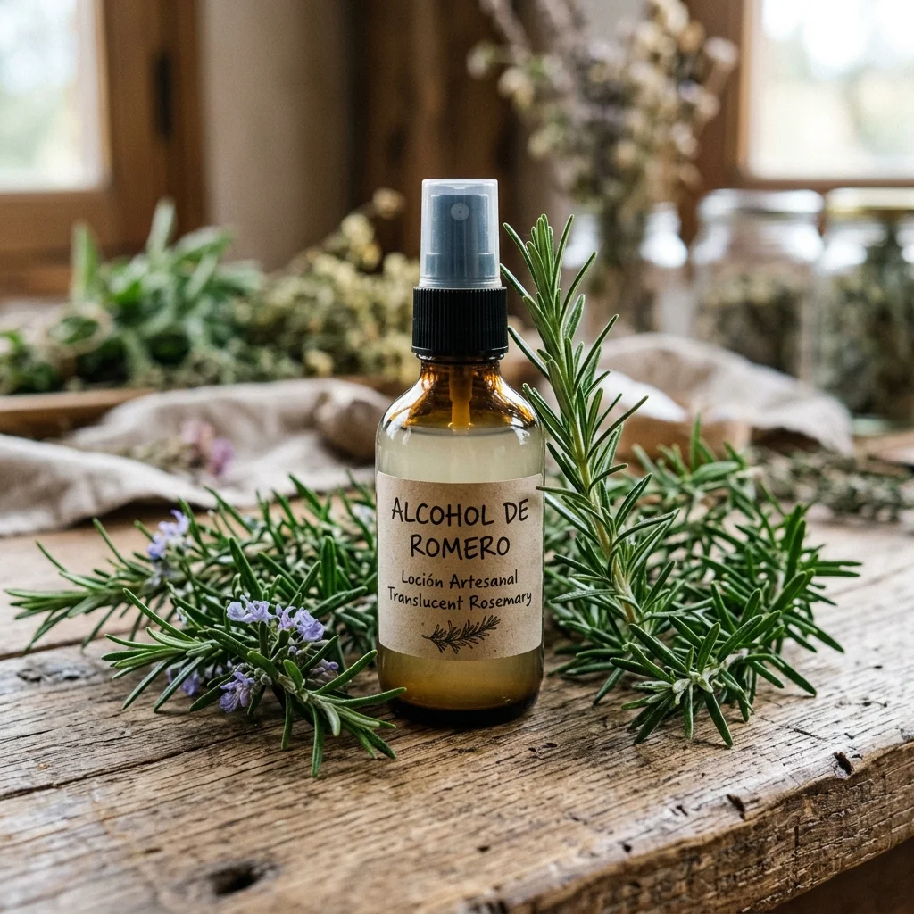
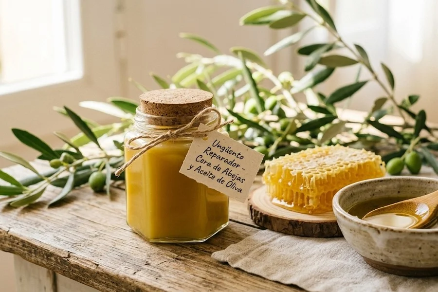
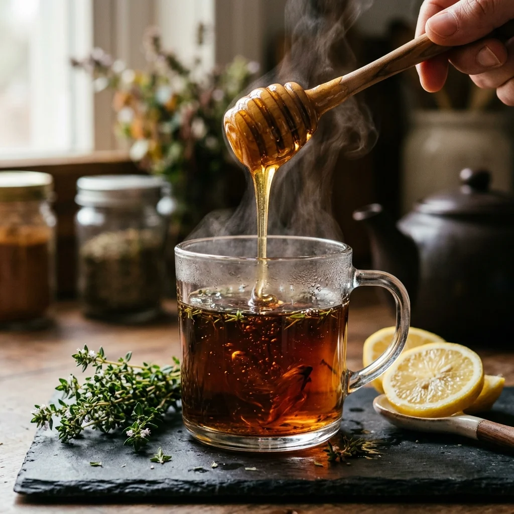

Loading ancestral wisdom...
Artículos Recomendados

Remedies 37KRosemary Alcohol Repellent Lotion
Alcoholic maceration of fresh rosemary branches. It acts as a volatile olfactory barrier for surface application on textiles, window frames and doors.

Remedies 34KBeeswax and Olive Oil Repair Ointment
Basic lipid formulation to regenerate areas of extreme dryness and cracks using only melted operculum wax and extra virgin olive oil.

Remedies 27KNatural Thyme and Honey Syrup for Cough
Grandmother's remedy to relieve cough, clear the bronchi and soothe an irritated throat with a concentrated infusion of wild thyme and pure honey.
Comentarios y Experiencias